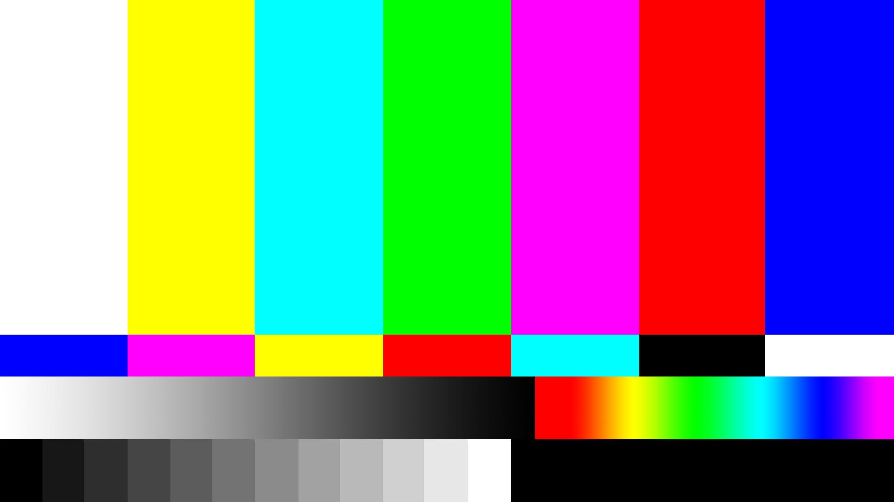

<!DOCTYPE html>
<html>
  <head><title>Seriously.js Tutorial</title></head>
  <body>
    <!-- page content goes here -->
    <script src="seriously.js"></script>
    <script src="effects/seriously.vignette.js"></script>
    <script src="effects/seriously.hue-saturation.js"></script>
    <script src="effects/seriously.split.js"></script>
    <script src="effects/seriously.chroma.js"></script>
    <script src="effects/seriously.color.js"></script>
    <!--  -->

    <video autoplay="true" id="vid"></video>

    <!-- <video src="test.mp4" id="vid"></video> -->
    <canvas id="canvas" width="640" height="480"></canvas>


    <input type="range" id="vignette-range" min="0" max="20" step="0.0001" value="1"/>
    <input type="range" id="chroma-balance-range" min="0" max="1" step="0.0001" value="1"/>
    <input type="range" id="chroma-weight-range" min="0" max="1" step="0.0001" value="1"/>
    <input type="range" id="chroma-clipBlack-range" min="0" max="1" step="0.0001" value="1"/>
    <input type="range" id="chroma-clipWhite-range" min="0" max="1" step="0.0001" value="1"/>


    <script>


var video = document.querySelector("#vid");

navigator.getUserMedia = navigator.getUserMedia || navigator.webkitGetUserMedia || navigator.mozGetUserMedia || navigator.msGetUserMedia || navigator.oGetUserMedia;

if (navigator.getUserMedia) {       
	navigator.getUserMedia({video: true}, handleVideo, videoError);
}

function handleVideo(stream) {
	console.log(stream)
	video.src = window.URL.createObjectURL(stream);
}

function videoError(e) {
	// do something
}


  // declare our variables
  var seriously, // the main object that holds the entire composition
  colorbars, // a wrapper object for our source image
  target; // a wrapper object for our target canvas

seriously = new Seriously();

// Create a source object by passing a CSS query string.
// colorbars = seriously.source('#colorbars');
colorbars = seriously.source('#vid')

// now do the same for the target canvas
target = seriously.target('#canvas');
// Now that we have all our objects created, let's connect them and start rendering.

var vignette = seriously.effect('vignette');
// vignette.amount = 20;
vignette.amount = '#vignette-range';
vignette.source = colorbars

var chroma = seriously.effect('chroma')
chroma.source = vignette
chroma.weight = '#chroma-weight-range'
chroma.balance = '#chroma-balance-range'
chroma.clipBlack = '#chroma-clipBlack-range'
chroma.clipWhite = '#chroma-clipWhite-range'

// connect any node as the source of the target. we only have one.
target.source = chroma

seriously.go();


    </script>


  </body>
</html>
